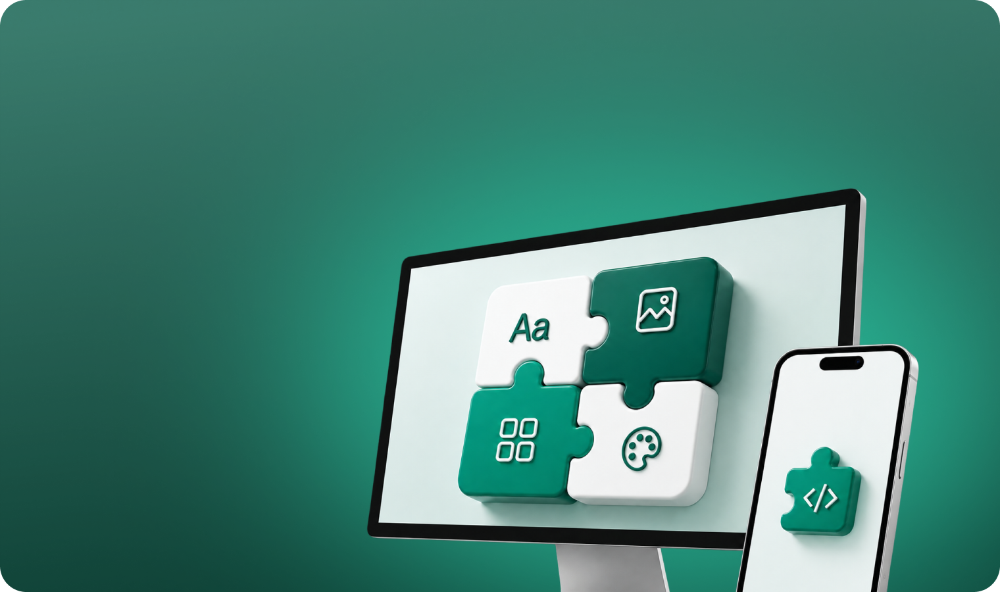
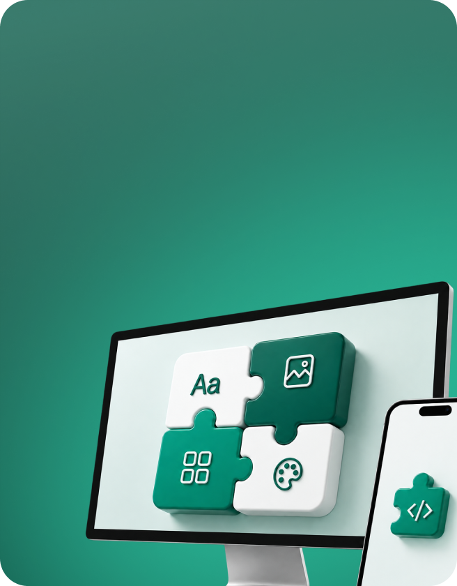
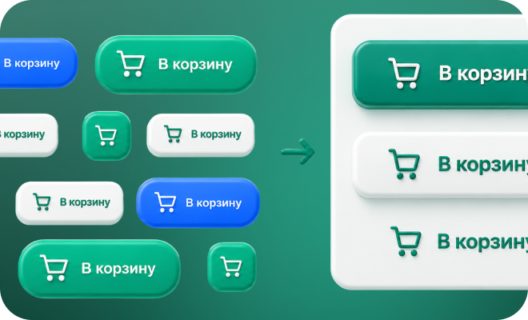
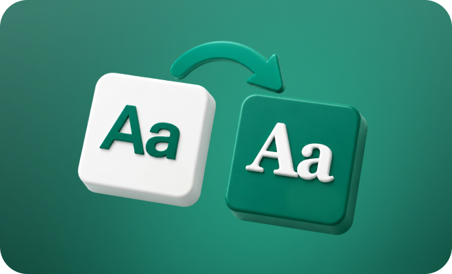
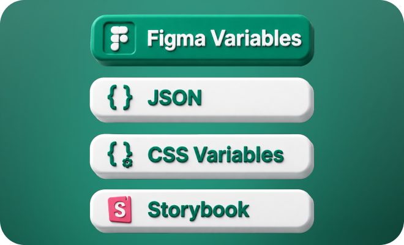
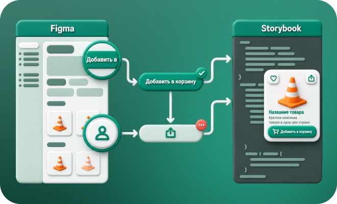

Интернет-магазин дорожного оборудования


OptimaService — интернет-магазин дорожного оборудования. На момент начала работы интерфейс уже выглядел готовым, но внутри него не было единой системы. Каждый новый экран собирался из копий старых, а общие изменения приходилось вносить вручную во множестве мест.
В этом кейсе показано, как разрозненные визуальные решения были собраны в дизайн-систему: проведён аудит, цвета и типографика разложены на токены, библиотека компонентов собрана в Figma и реализована в коде.
Превратить уже разработанные макеты интернет-магазина в согласованную дизайн-систему, синхронизированную с кодом.
Приоритеты системы согласовывались с руководителем дизайн-направления, а правила именования токенов и передача решений в код обсуждались с разработчиками.
элементов организованы в 110 готовых компонентов и секций
экранов переведены на дизайн-систему
уходит на сборку нового экрана вместо ≈2 часов
Что было на старте. Десктопная версия OptimaService была почти завершена, мобильные экраны существовали отдельно, цвета и гарнитура были утверждены. В команде был дизайнер и три разработчика. К началу работы над дизайн-системой проект находился в разработке почти четыре месяца.
В чём была проблема. Системы не было: повторяющиеся элементы рисовались заново на каждом экране, а стили не были организованы. На практике это означало:
одна и та же кнопка или поле ввода выглядели по-разному на разных экранах;
чтобы поменять цвет или шрифт, приходилось вручную проходить по всем макетам;
новый экран собирался из копий старых, и несоответствия переезжали вместе с ними;
в макетах и коде одни и те же элементы назывались по-разному.
Почему задача была нестандартной. Обычно дизайн-систему проектируют до создания экранов или параллельно с ними. Здесь всё было наоборот: готовый интерфейс требовалось разобрать, найти в нём закономерности и на их основе сформировать правила. При этом утверждённые решения нужно было сохранить, а систему выстроить поверх существующих макетов.

Был проведён аудит более 40 экранов для десктопа и мобильных устройств. В ходе аудита были выявлены повторяющиеся элементы: кнопки, поля, карточки товаров, навигация, текстовые роли, цвета и состояния.
Один из типичных результатов аудита: кнопка существовала в восьми версиях, различавшихся высотой, горизонтальными отступами и радиусом скругления. Только часть вариантов была оформлена как компоненты, остальные дублировались в макетах как отдельные элементы.
Сначала различия проверялись на функциональную необходимость: учитывались роль элемента, контекст использования и состояния. Затем оценивались частотность варианта и сложность поддержки в коде. Если различие не было критичным, его объединяли с базовым вариантом.
Большинство различий между версиями кнопки не меняло её роль и не влияло на сценарий использования. Поэтому такие варианты объединялись.
В ходе аудита были обнаружены многочисленные локальные вариации элементов. После объединения повторяющихся решений и фиксации необходимых различий они были организованы в библиотеку компонентов. По итогам аудита также был определён порядок работы: сначала типографика и цветовые токены, затем компоненты, документация и синхронизация с кодом.
Типографика была организована по ролям: четыре уровня заголовков, основной текст, описания и подписи. Для каждой роли были заданы размеры для десктопа, планшета и мобильных устройств, а название гарнитуры вынесено в отдельную переменную Figma.
Эта переменная пригодилась, когда было принято решение заменить шрифт Geologica на Roboto. После замены значения в переменной связанные стили, компоненты и макеты обновились без ручного изменения каждого экрана. Вся замена шрифта на уровне системы заняла около минуты.
Для приведения старых макетов к новой типографической структуре использовался плагин Selection Text. Он позволил массово применить стили к уже существующим слоям.
По той же логике в строковые переменные были вынесены названия категорий каталога. Это позволяло проверять, как длинные названия ведут себя в навигации и других элементах интерфейса, и заранее находить проблемы с переносами и переполнением текста.

В этом разделе описаны цветовые токены. Значения были разложены на три уровня:
Приведённые названия показывают разные уровни токенов, но не образуют одну цепочку: blue-500 — базовое значение, text-on-primary — семантическая роль текста на акцентном фоне, а button-primary-bg — компонентная настройка фона основной кнопки.
Такая структура разделяла исходное значение, его роль в интерфейсе и конкретное применение в компоненте. Семантический токен использовался для общего назначения, а компонентный — для точечной настройки элемента, не затрагивая другие компоненты. Дизайнеры и разработчики работали с ролями и компонентами, а значения хранились в одном месте.
Библиотека включала кнопки, поля ввода, иконки, карточки товаров, элементы навигации и другие базовые компоненты. На их основе были собраны более крупные составные компоненты и готовые секции, что ускорило создание новых макетов. Дизайнер начинал экран с выбора подходящей секции, а не с поиска и копирования старых макетов.
Особенно тщательно прорабатывались ключевые для магазина элементы. Например, для карточки товара были предусмотрены разные группы вариантов и состояний: обычное отображение, отображение скидки со старой ценой и бейджем, состояние «нет в наличии», состояние «в корзине». Для разных сценариев использования разработали два варианта раскладки: «сетка» и «компактная».
Каждый компонент описывался по единому шаблону: фиксировались его назначение, варианты, состояния, правила использования, поведение, адаптивность и связь с токенами. Например:
Button
Назначение: запуск основного или второстепенного действия на экране или в форме.
Варианты: primary, secondary, text-only.
Правила использования: primary используется для главного действия в конкретном контексте, secondary — для дополнительных действий, а text-only — для вспомогательных действий. В одном контексте рекомендуется выделять одно главное действие.
Поведение: ширина зависит от длины текста, но не может быть меньше заданного минимального значения. Текст не обрезается и не выходит за пределы кнопки.
Адаптивность: на мобильных устройствах кнопка может растягиваться на всю ширину контейнера, если это соответствует сценарию использования.
Токены: button-primary-bg, text-on-primary

Значения дизайн-токенов хранились в Figma Variables. Обновление проходило в несколько шагов: значение меняли в Figma, плагин повторно экспортировал данные в JSON, а команда разработки преобразовывала обновлённый файл в CSS-переменные и применяла изменения в проекте. Такой процесс заменял ручной поиск и переписывание отдельных значений.
Связь между дизайном и кодом выглядела так:
Figma Variables → JSON → CSS-переменные → компоненты в Storybook
Отдельно с разработчиками были согласованы правила именования токенов. Это заняло несколько итераций, зато в дизайне и коде появился единый словарь: названия переменных в Figma соответствовали названиям переменных в CSS.
Разработчики переносили компоненты в Storybook, где их можно было проверить отдельно от конкретных страниц и сценариев. На этом этапе проводилось дизайн-ревью реализации: состояния и варианты компонентов сверялись с макетами, проверялись значения токенов и типографика. Это помогало находить не только очевидные визуальные ошибки, но и расхождения, которые при сборке готового экрана остаются незаметными.
Изолированный компонент показывает такие отклонения лучше, чем готовая страница. Например, в поле ввода состояние error перекрашивало только рамку, а текст подсказки оставался серым. Кроме того, отступ между полем и подсказкой составлял 4 px вместо 8. На готовой странице эти детали могли потеряться среди других элементов, а в Storybook каждое состояние отображалось отдельно и позволяло точно сопоставить реализацию с макетом.
Так Storybook использовался не только как каталог компонентов для разработки, но и как инструмент контроля качества. Он помогал проверять, что внешний вид и набор состояний компонента согласованы во всех вариантах, а решения, принятые в дизайн-системе, одинаково отражаются в Figma и коде.

После завершения библиотеки существующие экраны в Figma переводились на компоненты дизайн-системы вручную, экран за экраном. На каждом экране локальные кнопки, поля, карточки и другие элементы заменялись соответствующими компонентами из библиотеки, а их размеры, отступы, типографика и состояния приводились к единым системным значениям.
Если экран содержал решение, связанное с особым сценарием, его сохраняли как отдельный вариант. Например, компактная карточка товара оставалась отдельной раскладкой, поскольку стандартная карточка каталога занимала много места в горизонтальном положении. Всего в Figma на компоненты дизайн-системы перевели 40+ экранов. В рамках этого этапа миграция касалась макетов в Figma, а перенос этих экранов на компоненты в существующем коде отдельно не оценивался.
В зависимости от сложности макета сборка нового экрана в Figma занимала от 15 до 30 минут вместо примерно двух часов.
Изменения в ключевых параметрах интерфейса, например в гарнитуре или цвете основных действий, теперь вносились через переменные и распространялись на связанные стили, компоненты и макеты.
Команды дизайна и разработки использовали единый словарь. Названия токенов и вариантов совпадали в Figma и коде.
После миграции в Figma в макетах каталога стало меньше расхождений между однотипными элементами.
На текущий момент многие задачи из этого проекта можно было бы решить быстрее благодаря развитию ИИ-агентов. Например, начальный аудит компонентов — выявление всех вариантов кнопок, полей и карточек на 40 экранах — теперь можно частично автоматизировать: агент анализирует макеты, группирует визуально похожие элементы и предлагает структуру токенов на основе найденных закономерностей. Миграцию экранов на компоненты библиотеки тоже можно ускорить: агент находит локальные элементы, сопоставляет их с компонентами из системы и предлагает замены, оставляя дизайнеру только проверку и утверждение. Это не отменяет необходимость принимать решения о структуре системы и проверять результат, но снижает долю рутинной работы и позволяет сосредоточиться на согласованности правил и качестве реализации.